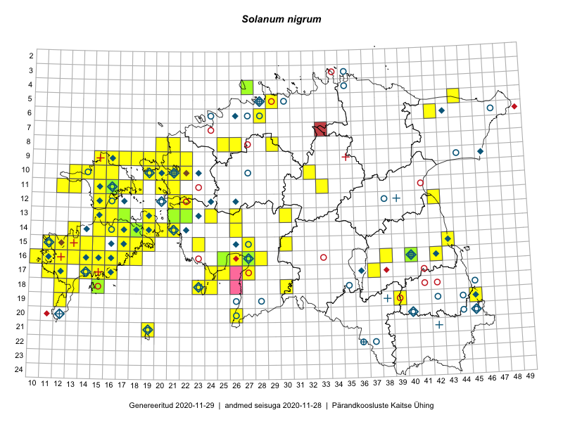

Solanum nigrum
Uuendatud: 2016-12-02
Kaardile koondatud taksonid: Solanum nigrum L.

Kaart põhineb 115 kirjel, neist vaatlusi 113 ja eksemplare 2. Taksonit on leitud 72 ruudust.
Kuvatud viited 20 esimesele andmebaasikirjele, ülejäänud PlutoFis
- Toomas Kukk, Eerik Leibak: 2015-08-12: 09-17: ala
- Peedu Saar, Sander Laherand: 2015-05-30: 06-42: ala
- Toomas Kukk, Tiit Hallikma: 2015-08-27: 12-21: GPS punkt
- Malle Leht: 2015-07-08: : ala
- Tiit Hallikma, Toomas Kukk: 2015-08-27: 12-21: ala
- Toomas Kukk, Timo Luhamäe, Kersti Tambets, Sten Mander, Janika Sammasto: 2014-07-29: 19-45: ala
- Toomas Kukk, Kersti Tambets, Timo Luhamäe: 2014-07-30: 19-45: GPS punkt
- Eeva-Maria Jeletsky, Tarmo Niitla: 2015-06-27: 11-12: ala
- Eeva-Maria Jeletsky, Tarmo Niitla: 2015-06-28: 11-13: ala
- Eeva-Maria Jeletsky, Tarmo Niitla: 2015-06-26: 12-15: ala
- Maret Gerz, Leena Gerz: 2015-08-12: 17-24: ala
- Maret Gerz, Leena Gerz: 2015-08-09: 16-25: ala
- Mari Reitalu, Triin Reitalu: 2015-09-17: 15-11: ala
- Mari Reitalu: 2015-08-25: 17-12: ala
- Erkki Otsman, Sergei Smirnov: 2015-07-12: 05-29: ala
- Ulvi Selgis: 2015-08-30: 18-30: GPS punkt
- Mari Reitalu: 2015-06-26: 17-12: ala
- Maret Gerz, Leena Gerz: 2015-08-12: 17-24: ala
- Kirsi Loide, Marje Loide: 2015-08-10: 13-22: ala
- Triin Reitalu, Mari Reitalu: 2015-08-09: 16-11: ala